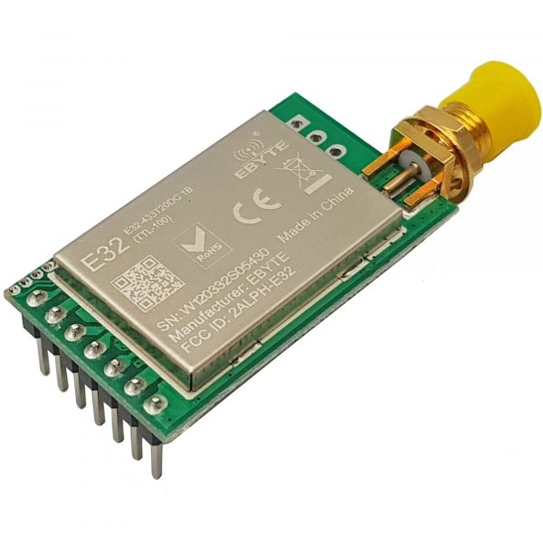
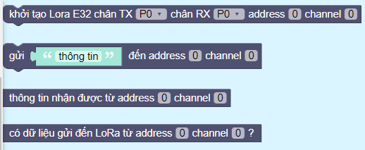
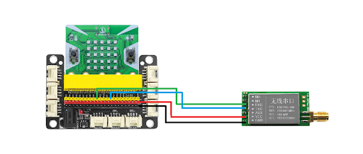
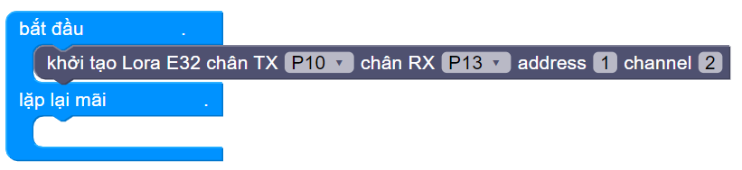
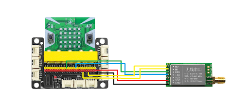
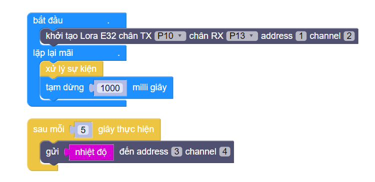

25. Mạch thu phát LoRa E32
{kind=link}
Mạch thu phát LoRa E32 (tên đầy đủ là RF UART Lora SX1278 433Mhz 3000m EBYTE E32-433T20DC) sử dụng chip SX1278 của nhà sản xuất SEMTECH, với chuẩn giao tiếp LORA (Long Range). Chuẩn LoRa có 2 ưu điểm lớn là tiết kiệm năng lượng và khoảng cách phát siêu xa (Ultimate Long Range Wireless Solution). Chúng cũng có thể được cấu hình để tạo thành mạng. Do đó, chuẩn LoRa được phát triển và sử dụng rất nhiều trong các nghiên cứu về IoT.
Mạch thu phát LoRa E32 được tích hợp khả năng chuyển đổi giao tiếp SPI (của SX1278) sang UART, giúp việc giao tiếp và sử dụng dễ dàng hơn. Bạn chỉ cần kết nối với Software của hãng để cấu hình địa chỉ, tốc độ và công suất truyền là có thể sử dụng
Trong hướng dẫn này, chúng ta sẽ cùng tìm hiểu cách truyền tải thông tin bằng LoRa E32 - một công nghệ cho phép truyền tải dữ liệu với khoảng cách lên đến 3000m với giá thành và chi phí thấp.
Đây là hướng dẫn cơ bản nhất về lập trình LoRa E32 với máy tính Yolo:Bit, để các bạn có thể tiếp cận và xây dựng được ứng dụng với công nghệ đang rất phát triển này.
1. Mua sản phẩm

2. Thông số kỹ thuật
Thông số kỹ thuật
Model: EBYTE E32-433T20DC Lora SX1278 433Mhz
IC chính: SX1278 từ SEMTECH
Điện áp hoạt động: 2.3 - 5.5 VDC
Điện áp giao tiếp: TTL-3.3V
Giao tiếp UART Data bits 8, Stopbits 1, Parity none, tốc độ từ 1200 - 115200
Tần số: 410 - 441Mhz
ông suất: 20dbm (100mW)
Khoảng cách truyền tối đa trong điều kiện lý tưởng: 3000m
Tốc độ truyền: 0.3 - 19.2 Kbps ( mặc định 2.4 Kbps)
512bytes bộ đệm
Hỗ trợ 65536 địa chỉ cấu hình
Kích thước: 21x36mm
Lưu ý: Chân M0, M1 có thể nối GND để truyền nhận bình thường hoặc nối với GPIO của vi điều khiển để thay đổi các Mode.
3. Kết nối và cấu hình cho LoRa
Chuẩn bị các thiết bị như sau:

|

|
|
|---|---|---|
Máy tính lập trình Yolo:Bit |
Mạch mở rộng cho Yolo:Bit |
Mạch thu phát LoRa E32 |
Số lượng 2 |
Số lượng 2 |
Số lượng 2 |
Chúng ta sẽ tiến hành lập trình cho 2 Yolo:Bit giao tiếp và truyền nhận thông tin với nhau, thông qua công nghệ LoRa:
{kind=link}
Kết nối LoRa với mạch mở rộng Yolo:Bit và cấu hình
Chúng ta phải cần thêm thư viện mở rộng LORA E32, bạn hãy copy đường dẫn sau: https://github.com/AITT-VN/yolobit_extension_LoRa_e32.git và dán vào mục mở rộng để tải thư viện mở rộng.
{kind=link}
Sau khi tải xong, tại danh mục bên trái sẽ xuất hiện các danh mục LORA E32. Các khối lệnh cơ bản bên trong bao gồm:

{kind=link}
Cấu hình cho Hệ thống module LoRa - Yolo:Bit thứ nhất có kết nối phần cứng như sau:
Bạn tiến hành nối các chân trên LoRa vào hàng cắm của mạch mở rộng Yolo:Bit như sau:
GND nối vào chân cắm màu đen (chân âm)
VCC nối vào chân cắm màu đỏ (chân dương)
RX nối vào chân P10
TX nối vào chân P13
Sau đó, chúng ta sẽ tiến hành lập trình cấu hình cho hệ thống thứ nhất, bằng cách khởi tạo 2 chân kết nối với LoRa, địa chỉ và kênh truyền nhận cho LoRa như sau:
Sau khi đã khởi tạo xong, chúng ta sẽ dùng thêm 2 dây cắm , nối 2 chân M0, M1 của LoRa vào hàng chân cắm màu đen trên mạch mở rộng (nối về chân GND) như sau:
Tương tự, bạn tiếp tục kết nối thêm một hệ thống LoRa - Yolo:Bit thứ hai và lập trình cấu hình như ở bước 2. Ta được 2 hệ thống như sau:
{kind=link}
{kind=link}
{kind=link}
{kind=link}
Chúng ta sẽ tiến hành lập trình khi đã cấu hình được ít nhất 2 LoRa để truyền nhận tín hiệu.
4. Lập trình gửi và nhận tín hiệu:
LoRa có 2 chế độ truyền:
Transparent (Minh bạch): Ở chế độ này, Lora sẽ truyền tín hiệu đến tất cả các LoRa khác có cùng địa chỉ và kênh truyền nhận.
ixed (Cố định): Ở chế độ này, Lora sẽ chỉ truyền tín hiệu đến Lora khác đã được quy định trong câu lệnh gửi tin, và cũng chỉ có LoRa được quy định mới nhận được tin nhắn.
Ở hướng dẫn này, chúng ta sẽ minh họa cho chế độ truyền Transparent.
Sau khi chúng ta đã khai báo cấu hình xong, chúng ta sẽ tiến hành lập trình trước cho việc gửi dữ liệu.
Hệ thống 1:
Dưới đây, chúng ta sẽ gửi nhiệt độ đến cho LoRa nhận tin có địa chỉ là 3 và kênh nhận dữ liệu là 4 sau mỗi 5 giây, bằng cách kết hợp khối lệnh sự kiện (Bạn có thể nhấn vào mục mở rộng, tìm kiếm tên SỰ KIỆN và tải thư viện này về):
Hệ thống 2:
- Tiếp theo, chúng ta sẽ cấu hình cho LoRa nhận địa chỉ 3 và kênh truyền 4: Khi LoRa muốn nhận tin, ta cần kiểm tra xem có tin nhắn gửi về hay không:
Nếu có tin nhắn thì hiển thị tin nhắn
Nếu không thì hiện mặt ngủ
{kind=link}
{kind=link}
Như vậy, chúng ta đã có thể gửi nhận tin nhắn 1 cách đơn giản với công nghệ LoRa, các bạn hãy thử với thiết bị của mình nhé!